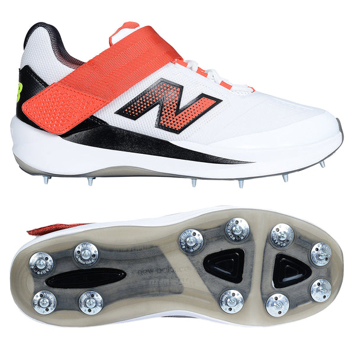

NEW BALANCE FOOTWEAR
₹7,999.00
Engineered specifically for the punishing demands of pace bowlers, the New Balance CK4040 cricket shoes feature responsive FuelCell midsole foam that absorbs intense landing impact and propels you into your delivery stride. The mid-cut silhouette provides reinforced ankle stability, while the 11-spike TPU outsole plate guarantees maximum traction across turf and dry wickets alike.
Back to Shopping